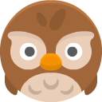
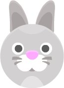

A phone game written in xTalk

Puzzle AlmanacA calm puzzle book for every day. Fill a Number Place grid, find the Hidden Word in six tries, and earn a sticker for each one you solve. Tomorrow brings new ones, the same for everyone.
- Touch: tap a square, then a number; tap the letters, then Enter
- Mouse: click as you would tap
- N Number Place, W Hidden Word
- ←→↑↓ choose a square, 1–9 write
- Type a word, Enter to try it
- Esc back to the almanac
How it plays The same rules on a phone, a tablet and a computer
Number Place
Fill the grid so that every row, every column and every box has each number once. Choose 4 by 4 for a young child, 6 by 6 or 9 by 9.
Hidden Word
Find the word in six tries. Gold is the right letter in the right place, blue is in the word somewhere else, and stone is not in it.

Collect the stickers
Each day's puzzle you solve puts a new animal in your sticker book. Thirty of them, then gold stars.
Never stuck
Every Number Place can be solved without a guess. Notes let you pencil in a square's maybes, and a hint fills one in.
Practice too
Practice gives as many more puzzles as you like, in every size, besides the day's own.
Easy to read
Atkinson Hyperlegible, made by the Braille Institute, keeps letters and numbers that look alike in other fonts apart.
Made with OXT-Beyond One stack, no web code
Written in xTalk
The whole game is one stack in xTalk Script: its screens, its puzzles and its rules. It is one of the Stack Player's samples, so it plays there too.
The same puzzle for everyone
Each day's puzzles are worked out from the date, so everyone gets the same ones, with nothing to download.
Kept in the browser
Your stickers and today's board are kept in the browser's own storage, so they are there on your next visit.